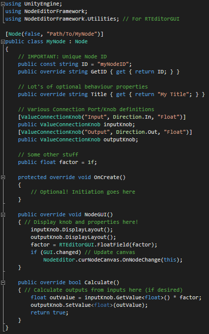
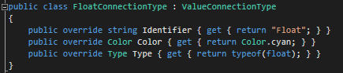

Building Extensions
This Page will guide you to create your own extensions up to a complete tool based on this framework.
Most of this is made possible by dynamically fetching new content (like nodes and other type specifications).
On the other hand, if you directly need to modify the framework itself,
refer to the Framework Overview to get a glimpse on how each framework part works.
Custom Nodes
Creating custom nodes is the core of every extension. It allows you to add new functionality to your graphs. Fortunately it is also pretty easy to do!
A node script needs to extend the NodeEditorFramework.Node class in order to provide the framework with the information needed.
The optional Node attribute added to the extended Node class specifies information about the presentation of the node in the editor.
The node can be placed anywhere in the project, as the Framework will dynamically fetch all Node implementations from all the standard script assemblies.
That also means that, even though the Framework is programmed in C#, you can add nodes in UnityScript with the limitation that they have to be compiled in phase 2,3 or 4,
as described here . Therefore the node implementation is described language independently.
The following list outlines the necessary Node members. You can take reference from the ExampleNode found in 'Plugins/Node_Editor/Nodes/Example'.
This applies only to the new system in the develop Branch!

-
using NodeEditorFramework - class extending
NodeEditorFramework.Node - Optional
Node Attribute(hide?, contextPath, [limitToCanvasType]) - Unique Node ID: define with
const ID, expose withoverride GetID -
Optional overrideable behaviour options
-
string Title = [Class Name]
Specifies the node title. -
Vector2 DefaultSize = (200, 100)
Specifies the default size of the node when AutoLayout is turned off. -
bool AutoLayout = false
Toggles auto-resizing of the node to adapt to content. If set to true, MinSize is regarded. -
Vector2 MinSize = (100, 50)
Specifies the minimum size the node can have if no content is present. -
bool AllowRecursion = false
Specifies if this node handles recursive node loops. For a loop to be permitted atleast one node needs to handle it. -
bool ContinueCalculation = true
Specifies if calculation should continue after this node has been successfully calculated.
-
string Title = [Class Name]
-
Connection Port Definitions (more information below)
- Attribute corresponding to the type to specify port properties.
- Actual variable to hold the port defined in the corresponding attribute.
- Method
protected override void OnCreate -
Method
public override void NodeGUI- Draw node GUI and expose properties for editing using
GUILayout/EditorGUILayout/RTEditorGUIfunctions. - Display/Position connection ports using their methods
DisplayLayout/SetPosition.
- Draw node GUI and expose properties for editing using
-
Method
public override bool Calculate- Use
connected/GetValuefunctions on your input ports to get their state and value. - Use
SetValuefunction on your output ports to set their calculated value. - Return false if something went wrong, else true!
- Use
Connections
NOTE: The following has been greatly revamped in the latest develop branch, and does not apply to the master branch anymore!
Connection Types
Understanding the hierarchy of the Connection Types is crucial for understanding the creation and styling of connections.
Basically the hierarchy allows to abstract features based on needs and future expansion of connection types, like transitions.
For each of these Connection Types, there are actually two more classes following the same hierarchy: the Attribute and the Style.
ConnectionPort A generic port of a node, able to connect to other ports of other nodes.
Defines name, which is enforced, and optionally styleID, direction and maximum connection count.
Does NOT define position or purpose or any of that matter.
Attribute:
ConnectionPortAttribute Style:
ConnectionPortStyle ConnectionKnob : ConnectionPort A knob at the side of a node, able to connect to other knobs on other nodes, provided they have an opposite direction.
Additionally defines node side and position at that node side. Also (currently) enforces specification of a direction.
Does NOT define purpose of the knob.
Attribute:
ConnectionKnobAttribute Style:
ConnectionKnobStyle ValueConnectionKnob : ConnectionKnob
A knob of a specific type at the side of a node, able to connect to other knobs of the same typeand opposite direction on other nodes.
Additionally defines a Type, which is enforced, and as such a purpose for the knob, to carry values from one end to the other.
Attribute:
ConnectionKnobAttribute Style:
ConnectionKnobStyle For the most case, you'll want to use ValueConnectionKnob, which allows you to actually pass values through the connection.
The corresponding attribute specifies details about a specific ConnectionPort and is used for creation.
The corresponding style can be extended to predefine styles (or in the case of ValueConnectionKnob, types), to be passed by their styleID to the attribute on creation.
In basically all cases the corresponding classes are NOT interchangable between hierarchy levels, means you can't use a ConnectionPortStyle for a ValueConnectionKnob definition, because it's missing vital information for the creation of a ValueConnectionKnob (like type).
Connection Port Creation
Now, to create a new ConnectionPort in your node, as mentioned above, you need to declare it as a normal field
and apply the corresponding attribute to it, specifiying all required (or optional) information.
[ValueConnectionKnob("Input", Direction.In, "Float")]
public ValueConnectionKnob inputKnob;
The framework automatically creates the knob according to the information you specified in the attribute.
This attribute can also be used to manually/procedurally create knobs using designed functions (for example refer to ResizingNode).
The here used styleID "Float" is part of the standard framework and it's definition looks like this:

Custom Node Canvas
NOTE: This section is WIP! This feature may also not have reached it's final stage yet and is only available on the develop branch!
If you need complete control over the lifetime of your canvas, the available nodes or restrictions on how nodes are used,
you can create a custom Node Canvas Type to drive some functionalities manually.
Additionally to that, you can also create your custom traversal routines for your canvases.
The default traversal routine calculates the node in an ordinary left-right fashion, but that can be completely replaced if you desire.
Implementation
Refer to the NodeCanvas class and the following examples for implementation guidelines on your own custom NodeCanvas type.
At core creating a custom NodeCanvas works the same way as creating custom Nodes, the framework fetches all NodeCanvas types dynamically and presents them to the user.
The NodeCanvasTraversal on the other hand is not handled by the framework, but by the canvas implementation itself.
The simplest form of canvas is the included CalculationCanvasType, which has no additional rules or restrictions.
The included GraphCanvasType on the other hand has a dedicated traversal system and also makes sure there is always exactly one root node.
A more complex example of a custom NodeCanvas can be found on the branch
Examples/Dialogue System .
Custom Input Controls
For your Editor Extension you might want to add custom controls or functions to the context clicks of both the canvas and the editor.
Using the dynamic Input system it is very easy to do just that using four provided attributes which can be applied to static handler functions.
Before explaining these in detail, it might be worth checking out the default controls in NodeEditorInputControls !
The primary information container, NodeEditorInputInfo , contains all informations about an event, including the editorState,
the mouse position and the invoking event. It is used to provide all necessary information to the dynamic input handlers.
The following event attributes work on the concept of priority, which is an optional parameter.
It primarily defines the order of execution, starting from the lowest value (in small negatives) to 100.
Specifying a value above 100 will execute the input after the GUI has been processed, to make sure it does not block the UI.
EventHandler Attribute
The EventHandlerAttribute is used to handle arbitrary events for the Node Editor and is the most flexible attribute.
Some default controls like Node dragging, panning, zooming and Node connecting could only be implemented using this attribute.
Tagging a static function with this attribute makes it get called when the specified 'EventType' occurs (or always when no event specified).
The method signature must be as follows:[ Return: Void; Params: NodeEditorInputInfo ]
Hotkey Attribute
The HotkeyAttribute is used to provide a simple interface for hotkeys for the Node Editor.
Some default controls like Navigating ('N') and Snapping ('Control') are implemented using this attribute.
It allows you to specify a KeyCode / EventModifier combination with a limiting
EventType to specify when the tagged static function gets called.
The method signature must be as follows:[ Return: Void; Params: NodeEditorInputInfo ]
ContextEntry Attribute
The ContextAttribute is used to register context entries for the NodeEditor.
The tagged function is called when the context element at the specified path is selected.
In which context menu to add this element is specified by the type, like the node context click or the canvas context click.
The method signature must be as follows:[ Return: Void; Params: NodeEditorInputInfo ]
ContextFiller Attribute
The ContextFillerAttribute is used to register context entries in the Node Editor in a dynamic, conditional or procedural way.
This function will be called to fill the passed context GenericMenu in any way it likes to. Again the type specifies the context menu to fill.
The method signature must be as follows:[ Return: Void; Params: NodeEditorInputInfo, GenericMenu ]
Custom Editor
The provided Editor Window serves as the default Node Canvas Explorer for all normal extensions and works perfectly fine in most cases.
But in order to make your extension stand out or implement custom functionalities, you might want to built your own Editor Interface.
The following outlines the most important things to consider in order to build a basic Node Editor Interface in both Runtime and the Editor.
There are actually two different entities you can either use or replace, depending on how much you want to customize.
NodeEditorInterface, which helps building the interface, and NodeEditorUserCache, which takes care of storing and caching the canvas.
Editor Canvas Storage
The Editor has to store the NodeCanvas and it's NodeEditorState and manage them apropriately.
For a detailed explanation of these, refer to the Framework Overview .
NodeEditorUserCache is a class to aid your extension managing the Canvas and EditorState.
It handles storing, saving/loading and caching of the canvas.
In most cases, you don't even need to edit this, unless you want to change the standard save behaviour.
Check out either NodeEditorWindow or RTNodeEditor for reference on how to use it.
Editor GUI & Interface
Before anything else, OverlayGUI.StartOverlayGUI / OverlayGUI.EndOverlayGUI and NodeEditorGUI.StartNodeGUI / NodeEditorGUI.EndNodeGUI
need to be wrapped around the GUI code to get the custom popups to work and make the GUI look uniform.
Before drawing the canvas surface, make sure the canvas is loaded and assign the area rect to NodeEditorState.canvasRect .
Then, in order to account for errors that may be thrown, embed the following drawing function in a try-catch block that unloads the canvas when an error was thrown.
Make sure you only catch UnityExceptions though, because of a Unity bug all pickers like
ColorField , CurveField or ObjectField will throw an error when inside a System.Exception -try-catch-block.
In this try-catch-block you can safely call NodeEditor.DrawCanvas , passing both the NodeCanvas and the EditorState ,
in order to draw the canvas in the specified area.
Finally, for your sorrounding interface, you can either roll your own or use the shared NodeEditorInterface class.
This allows you to quickly create controls for your canvas like the toolbar or modal panels (in the develop branch only).
They are very straightforward to use, refer to either NodeEditorWindow or RTNodeEditor for reference once again.
Custom GUI Skin
The GUISkin of the Node Editor can currently only be changed by modifying the NodeEditorGUI source file or by replacing the textures. For the future a more extensive and separated control over the GUISkin is planned.
Events & Callbacks
The Framework supports a collection of events which might be important during the editing process.
Those Events can either be received by subscribing to the appropriate delegate in the NodeEditorCallbacks class or
by extending from NodeEditorCallbackReceiver (which is a MonoBehaviour) and overriding the appropriate method.
Both classes can be found in NodeEditorCallbackReceiver
-
OnEditorStartup: The Node Editor gets initiated (can also happen when switching scene or playmode) -
OnLoadCanvas(NodeCanvas): The passed canvas has been loaded as a copy -
OnLoadEditorState(NodeEditorState): The passed editorState has been loaded as a copy -
OnSaveCanvas(NodeCanvas): The passed canvas has been saved as a copy -
OnSaveEditorState(NodeEditorState): The passed editorState has been saved as a copy -
OnAddNode(Node): The passed node has been created or duplicated -
OnDeleteNode(Node): The passed node will get deleted -
OnMoveNode(Node): The passed node has been moved by the user -
OnAddConnectionPort(ConnectionPort): The ConnectionPort has been dynamically added. -
OnAddConnection(ConnectionPort, ConnectionPort): A new connection has been created between both ports. -
OnRemoveConnection(ConnectionPort, ConnectionPort): The connection between both ports will get removed.
-> Some of the Node-specific callbacks can also be accessed from the Node directly by overriding the appropriate method.
-> You can always implement additional callbacks or request them to be implemented!